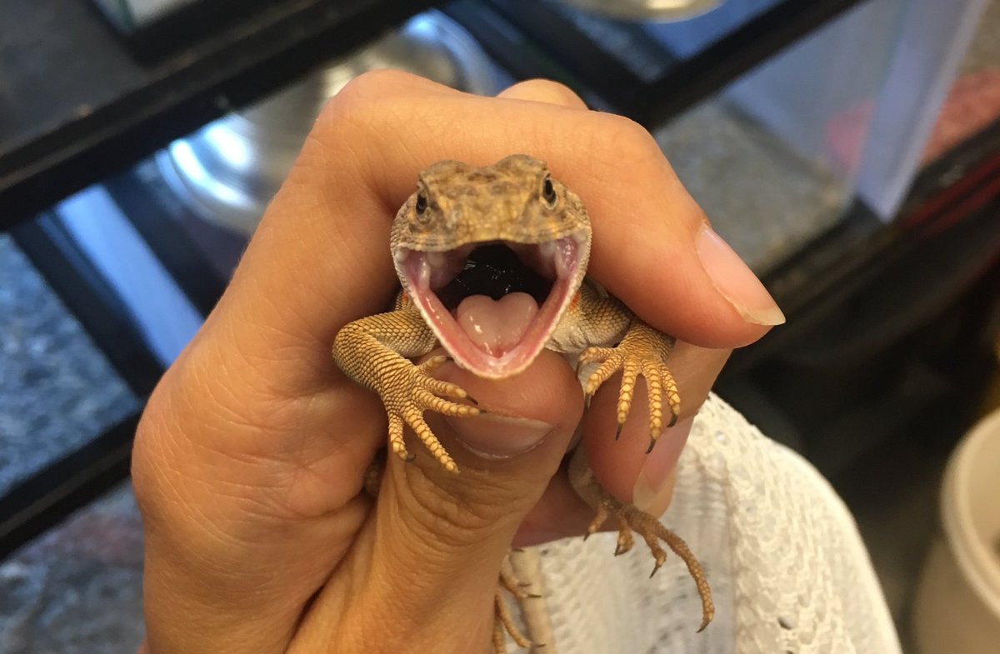

Research
Much of my current research focuses on the Eastern Collared Lizard (Crotaphytus collaris)
Collared lizards are fascinating animals with vigorous mating displays, sexual dichromatism in both juveniles and adults, and a tangle of influences on their sex determination, among many other endearing characteristics. Below I breifly outline where my work fits in the study of this species and how that work informs our understanding of ecology and evolution.

Sex Determination
A few years ago a research group definitively demonstrated that a lizard with obvious morphologically identifiable sex chromosomes could undergo a complete phenotypic sex change in the presence of extreme egg incubation temperatures. Not only does the bearded dragon switch sex, it does it with style. Sex-switched (non-concordant) females produce more eggs than sex-concordant females!
Soon after the publication of this (very exciting!) discovery a collegue (Dr. Enrique Santoyo-Brito) started asking if perhaps the unusual hatchling ratios he was seeing in his incubation experiments could be due to sex-reversal in Crotaphytus collaris and the rest is, as they say, history (or maybe future because we sooo aren't there yet). We've been chasing down the genetics of sex determination in collared lizards ever since.
So far, using gene dosage analysis, we've produced evidence that strongly points to and XX/XY sex determination system in C. collaris (as opposed to ZZ/ZW in bearded dragons) and hints at sex reversal in hatchlings incubated at extreme high and low temperatures. We came up against a hurdle when attempting to use Y-chromosome markers from other lizard species (they wouldn't amplify) so now we are attempting to create our own. Undergraduate researcher, Zane Pederson, is analyzing ddRAD data collected by Alex Krohn, searching for areas of the collared lizard genome that are different between males and females. We have some preliminary data that looks promising!
Websites
Packages and Code
Some genomics analysis "easy buttons"
To quickly and easily download SRA data sra-explorer.info
To analyze genomics data without having to have tons of computational space or be able to script usegalaxy.eu
A list of functional genomics assay technologies maintained by Dr. Lior Pachter: Star-Seq